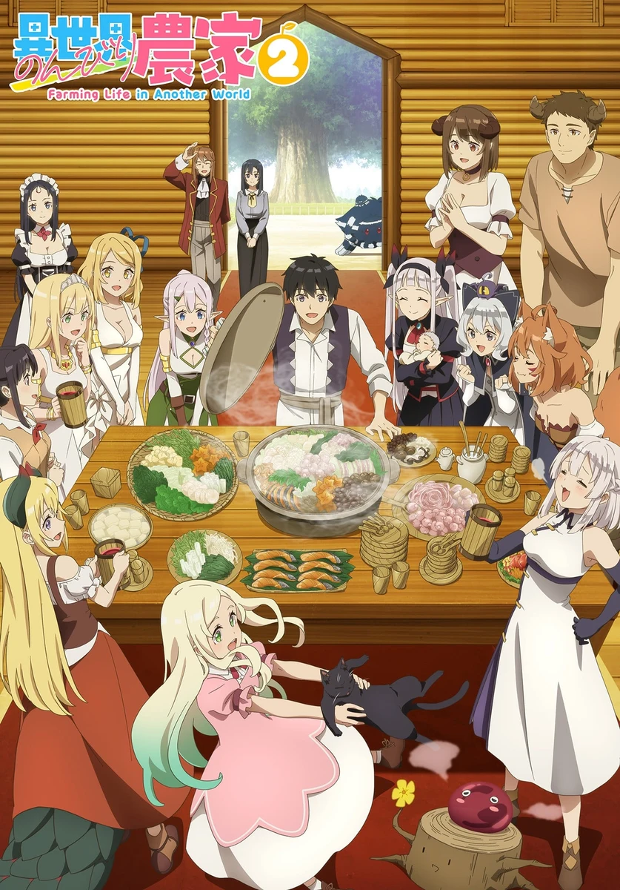

COMPLETE RECORD · Pages 轻量资料
异世界悠闲农家 第二季
異世界のんびり農家2
别名
- 異世界悠閒農家 第二季
- Isekai Nonbiri Nouka 2
- Farming Life in Another World Season 2
- 形式
- TV
- 首播
- 2026-04-06
- 集数
- 12 集
- 评分
- 6.5
- 评分人数
- 1502
SYNOPSIS
简介
过去，抱着体弱多病的身体孤独地活过一生的青年・火乐，因为神的恩宠转生来到异世界。 他在森林深处打造的小小农场，随着吸血鬼、精灵、兽人、天使族…等各式各样的同伴聚集前来，如今已经成长为被称为「大树村」的热闹聚落。 耕作田地、饲养家畜，和同伴们一起度过欢笑的平稳日常。 但是，因为造访者络绎不绝，村子变得越来越忙碌了！ 新的作物、新的同伴，以及新发生的骚动，为火乐的慢活人生增添了色彩。 悠闲却又恰到好处的热闹、开心忙碌却又和乐的氛围，「只属于自己的理想乡村生活」仍在持续发展中！ 洋溢笑容和美味的料理，异世界农业生活第2幕，在此开幕――！
[简介原文] かつて病弱な体で孤独に生きた青年・ 火楽は神の恩寵によって異世界に転生した。 森の奥深くに作った小さな農場は、吸血鬼、エルフ、獣人、天使族… 多種多様な仲間たちが集まったことで、 今や「大樹の村」と呼ばれる賑やかな集落へと成長した。 畑を耕し、家畜を育て、仲間と笑い合う平穏な日々。 しかし、訪問者は後を絶たず、村はますます大忙し！ 新たな作物、新たな仲間、そして新たな騒動が火楽のスローライフを彩っていく。 のんびりほどほど賑やかに、楽しくドタバタ和やかに、“自分だけの理想の田舎暮らし”は、まだまだ拡大中！ 笑顔と美味しいご飯が溢れる、異世界農業ライフ第2幕が、ここに開幕――！
EPISODE LOG
正片章节
已收录 12 条正片章节
- 1欢迎 首播：2026-04-06时长：24 分钟
- 2移居者们 首播：2026-04-13时长：24 分钟
- 3冬天到来 首播：2026-04-20时长：24 分钟
- 4武斗会 首播：2026-04-27时长：24 分钟
- 5今天也很和平 首播：2026-05-04时长：24 分钟
- 6待客的好日子 首播：2026-05-11时长：24 分钟
- 7温泉调查队 首播：2026-05-18时长：24 分钟
- 8续·温泉调查队 首播：2026-05-25时长：24 分钟
- 9重返日常 首播：2026-06-01时长：24 分钟
- 10祭典和芙修的谢礼 首播：2026-06-08时长：24 分钟
- 11空中之城 首播：2026-06-15时长：24 分钟
- 12大家的村子 首播：2026-06-22时长：24 分钟